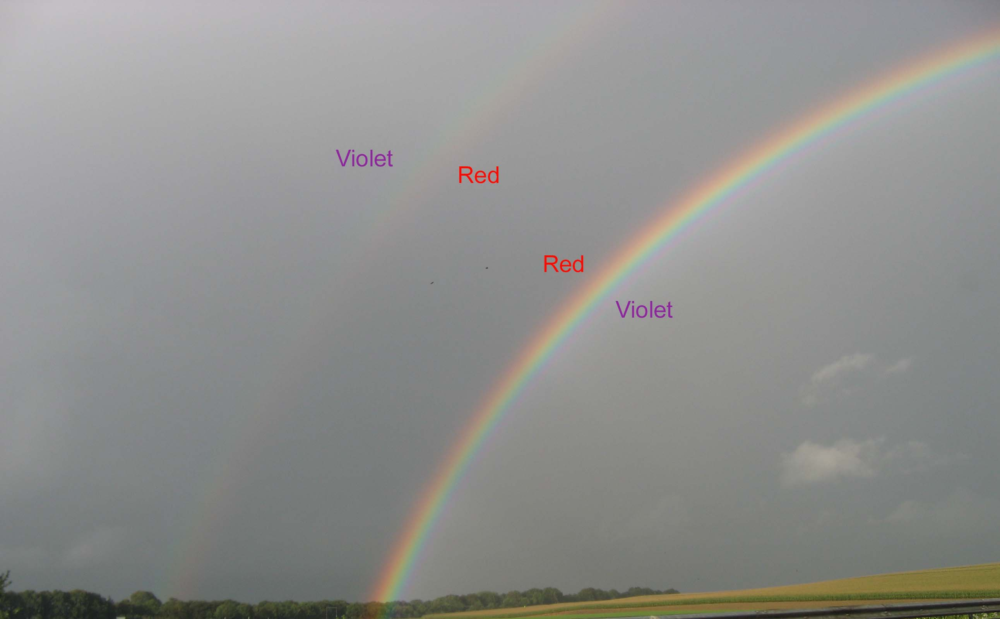
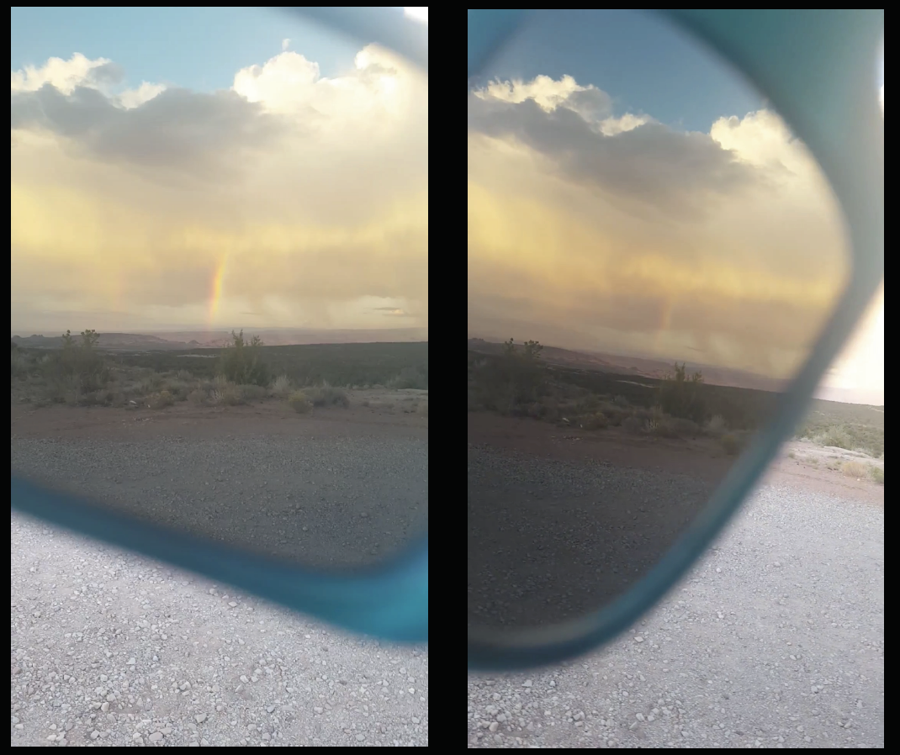

Polarization and why it's powerful.
Have you ever wondered why using polarized sunglasses while you are driving, or in a day out at the lake helps you see better? Have you ever, even accidentally, turned your head sideways and got blinded by the glare of the car driving in front of you even though you wear your polarized sunglasses? Why does that happen and what does that have to do with exoplanet and brown dwarf atmospheres?
Polarization: You have probably heard before that light is made of oscillating electric and magnetic waves (it can also behave like it is particles, but that is a whole other discussion...). Polarization has to do with the orientation of these waves in space. Natural light, like the light coming from a not very active star like our Sun, is comprised of waves that oscillate in all directions randomly. Natural light therefore has no prefered direction of oscillation and is called unpolarized. If for some reason (we will talk about this soon) there is a prefered direction of oscillation the light is polarized. How much polarized the light is, is measured in a percentage: when all waves oscillate in the same direction the light is 100% polarized, when half of the waves oscillate in the same direction and the other half in random directions the light is 50% polarized and so on. Can you guess what percentage of polarization unpolarized light has?
 Image 1.
Imagine that the waves are coming out of
your screen and that the peak of the wave is indicated by an arrow. If waves are similar in all directions, aka
there is no preferred direction, all arrows are similar and the light is unpolarized (top panel). If waves oscillate in only
one preferred direction, there are no arrows in other directions and the light is 100% linearly polarized (middle panel). If a percentage
of photons have a preferred direction of oscillation and the rest don't, some arrows are larger than the rest and
the light is partially polarized (bottom panel). Sometimes the preferred direction changes with time following a
circle. Then we have circular polarized light. In reality of course, we don't measure "arrows" but
how much light we get in different directions. Keep on reading to find out how we do this!
Image 1.
Imagine that the waves are coming out of
your screen and that the peak of the wave is indicated by an arrow. If waves are similar in all directions, aka
there is no preferred direction, all arrows are similar and the light is unpolarized (top panel). If waves oscillate in only
one preferred direction, there are no arrows in other directions and the light is 100% linearly polarized (middle panel). If a percentage
of photons have a preferred direction of oscillation and the rest don't, some arrows are larger than the rest and
the light is partially polarized (bottom panel). Sometimes the preferred direction changes with time following a
circle. Then we have circular polarized light. In reality of course, we don't measure "arrows" but
how much light we get in different directions. Keep on reading to find out how we do this!
How does light get polarized?
For light to get polarized it needs to interact with material in a way that part of, or all, its waves get a prefered direction of oscillation. This can happen in different ways, including reflection (e.g., think of the glare of your dashboard, the car driving in front of you, the water of a lake etc), scattering (e.g., think of interactions of light with molecules in the atmosphere) and refraction (e.g., the interaction of light with different materials and crystals). All these processes can affect both how much light is polarized, but also how its polarization changes when viewed from different angles. This latest property is key for deciphering what the clouds of an exoatmosphere are made of, even when the planet is but a pixel wide in our images!
There's a number of great resources on the web that explain in detail how light gets polarized, so here (at least for the time being) I will just give a bird's view of some reflection and scattering processes which are key for exoplanets and brown dwarfs.
Reflection happens when light bounces off a surface, like a mirror for example. Light then changes the direction it moves and gets a preferred direction of oscillation, which means that it is highly polarized. Some examples of the polarization from reflection you can see when driving with your car and look at your dashboard or car ahead of you, or when at a lake or other big and calm water body. Wearing your sunglasses helps block the polarized light (keep on reading to find out why), so you can drive or look at the water without getting annoyed.
- Light entering water droplets gets refracted and split into its colors. Then it can get reflected inside the droplets and gets polarized,
and then get refracted again when exiting the droplet. You know this light as a rainbow. Rainbows are produced from a combination of
refractions and reflection(s) which are possible only when the Sun is behind you and the rain droplets in front of you.
The so-called primary rainbow, the rainbow we all know, is made with a single reflection. If light gets reflected again in the droplet
you get the secondary rainbow and you see a double rainbow. Because of the second reflection colors get flipped and the colors of the
second rainbow are reversed in comparison to the normal rainbow. Because of the reflection light undergoes rainbows are highly polarized.
When you see a rainbow next time, if you have your polarized sunglasses close-by wear them and turn your
head left and right. You will see a bright rainbow in one direction and hardly any rainbow in the other direction (see also the image
below).
Water clouds in the atmosphere of our Earth can also create rainbows that can be observed from other planets. The same thing is true for exoplanets. If we observe them at the right position around their parent stars we can see the rainbow and know that there are water clouds in their atmosphere! As the rainbows are highly polarized, we can use polarization to see the rainbow and detect water clouds on exoplanets (see here ). Image 2. A double rainbow along highway A1 in the Netherlands. The colors of the secondary rainbow are inverted because of the second reflection the light undergoes inside the water droplets.
 Image 3. Looking at a rainbow through my polarized sunglasses in the Canyonlands NP area. Rainbows are produced from a combination of refractions and a reflection. Because of the reflection involved in this process rainbows are highly polarized. You can see a bright rainbow looking with your polarized sunglasses in one way, and hardly see it when turning the sunglasses close to 90 degrees away. Try it out next time you see a rainbow out there!
- A habitable planet like the Earth has big water bodies, oceans and big lakes, that can act as mirrors. Glints,
the reflection of the parent-star's light on an ocean when viewed under specific angles, are one of the tools we can use
to detect oceans on exoplanets. These glints can also be highly polarized (remember that it is a reflection), allowing us to verify
the existence of the ocean both in flux and polarization. If however, the water body is wavy and foamy the waves of the reflected
light will be more randomized (think of how many different, tilted reflecting surfaces there are on a single wave)
and thus the light will be less polarized.
- Clouds and surfaces finally, scatter light.